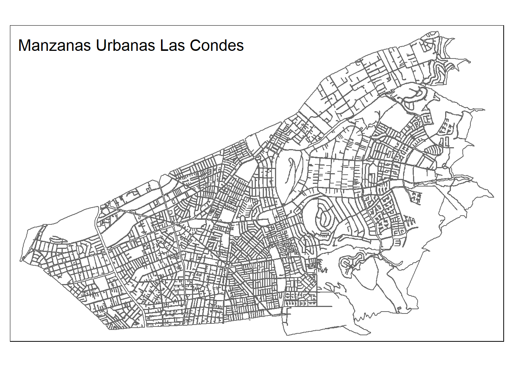

# librerias
library(dplyr)
library(sf)
library(rgdal)
library(rgeos)
library(raster)
library(spatstat)
library(spdep)
library(tmap)
library(exactextractr)
options("rgdal_show_exportToProj4_warnings"="none")
## Definir proyeccion
crs_utm <- "+proj=utm +zone=19 +south +datum=WGS84 +units=m +no_defs +ellps=WGS84 +towgs84=0,0,0"
crs_ll <- "+proj=longlat +datum=WGS84 +no_defs"4 Dimensión Seguridad
4.1 Resumen
El indicador de seguridad (ISEG) es un índice normalizado que busca mostrar el nivel de seguridad de cada manzana, representando con 1 las manzanas que cuentan con el mayor nivel de seguridad y con 0 las de menor nivel de seguridad.
Esto es relavante para el bienestar de las personas, entendiendo el efecto que ejerce la violencia en el desarrollo y el ejercicio de la libertad individual, además de su impacto en la confianza hacia otras personas, vecinos e instituciones. Limitando la eficacia y extensión de las redes de apoyo (Social 2016, 2015)
Operativamente este indicador se construye a partir de la densidad kernel de la ocurrencia de delitos por cada territorio, lo que significa que para cada región se estima una función de densidad de probabilidad de los delitos. Esto representa una medida de concentración relativa de hechos delictuales. Una vez calculada la densidad, se pasa la información a raster y se le asigna a cada manzana el valor del raster que está en el centroide.
El indicador de seguridad se calcula para 4 categorías de delitos: Leves personas, Graves personas, Leves propiedad y Graves propiedad.
4.2 Insumos
El trabajo de estos indicadores usa el tipo de dato punto, el cual representa la ocurrencia y ubicación de un elemento o hecho. Es así que el principal insumo es la ocurrencia de delitos en el territorio, lo que se representa por puntos. Estos deben ser anonimizados, lo que implica agrupar puntos en una grilla regular de 100 metros.
Por otro lado, es necesario categorizar los delitos, lo que se consigue mediante el uso de un diccionario que asocia la categoría del delito con una clasificación que diferencia entre el objeto de delito (personas o propiedad) y el nivel de gravedad de este (leve o grave). Un ejemplo de las categorías usadas se muestra a continuación:
4.3 Proceso
El proceso en general considera un proceso de entrada donde se toma la ocurrencia de delitos y se le asigna la categoria a partir del diccionario mencionado.
Luego, estos puntos se analizan mediante un proceso de kernel de densidad, que genera hotspots de agrupación de delitos en formato raster.
Luego este resultado debe ser asignado a las manzanas censales, mediante el promedio de valores de la grilla de densidad dentro de cada manzana.
Finalmente el resultado a nivel de manzana se normaliza para que se exprese entre los valores de 0 a 1, y se invierte para que el mas alto valor implique la ausencia de ocurrencia de delitos.
4.3.1 Proceso de Kernel de densidad, puntos a raster.
Para calcular la densidad de kernel se crea un objeto de clase ppp que representa un patron de puntos en un plano de dos dimensiones.
Para crear este objeto, necesitamos una ventana de trabajo que contará con las dimensiones del límite urbano más un margen de 500 metros. Además, el límite urbano se pasa a raster con un buffer también de 500 metros. En la aplicación de ejemplo se demuestra este proceso en una comuna, por lo que a modo de ilustración se usan 100 metros en vez de 500.
Una vez hecho lo anterior, se calcula la densidad kernel con la función density del paquete stats. Conceptualmente, lo que hace esta función es calcular la densidad de puntos (delitos) por unidad de área.
Se ajusta una superficie curva uniforme sobre cada punto, y en el centro, donde está el punto, el valor del raster es más alto, y a medida que nos alejamos del centro el valor del raster disminuye.
Luego, la densidad kernel que fue calculada en la ventana de trabajo se pasa a raster con la proyección UTM 19 sur WGS84.
Finalmente, cada raster posee un valor que corresponde a la densidad de delitos que hay en esa celda.
4.3.2 Asignación a Manzanas
Para imputar los valores de los raster a las manzanas, se considera el valor que contiene el raster que está al centro de la manzana (centroide).
Una cosa importante a notar es que la densidad de kernel asigna un valor más alto cuando estamos en presencia de la máxima cantidad de delitos por área.
4.3.3 Normalización e Invertir.
El indicador ISEG asigna un mayor valor a las manzanas con mayor seguridad (menor cantidad de delitos) y un menor valor a las manzanas con menor seguridad (mayor cantidad de delitos).
Por lo que, una vez imputado el valor del centroide a cada manzana, se invierten los valores de la densidad kernel para lograr obtener la lectura del indicador ISEG, el cual al ser un índice normalizado contiene valores entre 0 y 1, donde 1 significa la mayor seguridad dentro de la muestra.
4.4 Aplicación
A continuación se demuestra el flujo de trabajo mencionado para la comuna de Las Condes. Comenzamos por configurar el entorno de trabajo:
Luego cargamos los datos de entrada: las manzanas y la ubicación de delitos.
# puntos con ocurrencia de delitos
violencia <- readRDS("data/casos_violencia.rds")
# polígono de manzanas censales
mzs <- readRDS("data/manzanas_lc.rds")
# consolida polígono comunal a partir de manzanas
lu_reg <- st_as_sf(mzs) %>% st_buffer(100) %>% st_union() %>% st_buffer(-100) %>% as_Spatial()A continuación se presentan las manzanas de la comuna:
tm_shape(mzs) + tm_borders() + tm_layout(title="Manzanas Urbanas Las Condes")
En esta demostración los puntos se refieren a hechos de violencia y ya se encuentran anonimizados. El flujo busca mostrar como se tratan estos datos en los distintos indicadores de la dimensión. A continuación se demuestra la ubicación de estos:
## Generar puntos espaciales
violencia = SpatialPointsDataFrame(coords=violencia[,c("x","y")], data = violencia, proj4string = CRS(crs_utm))
## Visualizar
plot(violencia, main = "Delitos violentos en la comuna de Las Condes", col ="red")A partir de esto generamos el kernel de densidad. Esto se consigue primero generando una ventana de obesrvación y transformando los puntos al tipo de objeto patrón de puntos representado por ppp. Como se mencionó anteriormente, al ser una ilustración comunal del proceso, se trabaja con una resolución de 100 metros en vez de 500. En la aplicación oficial, se usa una resolución de 500 metros.
grid_spacing = 100 # aplicacion comunal, para aplicacion regional usar 500 metros
ext <- extent(violencia)
x_min <- ext[1] - grid_spacing
x_max <- ext[2] + grid_spacing
y_min <- ext[3] - grid_spacing
y_max <- ext[4] + grid_spacing
w <- as.owin(c(x_min,x_max, y_min, y_max)) # ventana que define espacio de trabajo
r <- fasterize::raster(lu_reg,res=grid_spacing)
# base de puntos
pts <- coordinates(violencia)
p <- ppp(pts[,1], pts[,2], window = w)Con el patrón de puntos y la ventana de observación se calcula la densidad:
# Calculo de Hotspots con radios mas y menos extensos de agregacion (adjust*bandwidth)
del_hotspots_1 <- stats::density(p, adjust=.25) # parametro de radio de kernel
plot(del_hotspots_1, main='Densidad de Delitos Violentos 0.25')A partir de la densidad es necesario tratar el dato para trabajarlo en formato raster y reproyectarlo al área de trabajo:
# Transformar a Raster ----------------------------------------------------
kde_del <- raster(del_hotspots_1)
proj4string(kde_del)=proj4string(violencia) # Asignar CRS # corregido
kde_del <- raster::mask(kde_del, lu_reg) # Cortar por contorno URBANO
# kde_del <- kde_del * factor_mult
kde_del[kde_del < 0] <- 0
# Reasamplear ------------------------------------------------
kde_del <- resample(kde_del, r)El resultado de esto se muestra a continuación:
plot(kde_del, main = "Raster de Densidad de Delitos en Las Condes")Ya con la información preparada en formato raster solo resta asignar estos valores a los polígonos de interés, en este caso las manzanas. En este caso asignaremos el valor del raster al polígono mediante la intersección del centroide de la manzana en el raster de valores.
values_mz <- terra::extract(kde_del, st_centroid(st_as_sf(mzs)))
normalize_minmax <- function(x) {
(x - min(x, na.rm = T)) / (max(x, na.rm = T)-min(x, na.rm = T))
}
mzs_res <- st_as_sf(mzs) %>%
mutate(indicador = values_mz) %>%
mutate(
indicador = 1-round(normalize_minmax(indicador),4)
)El resultado de esto se presenta a continuación:
mzs_res %>%
tm_shape() +
tm_fill("indicador", style="jenks", palette="RdYlGn")